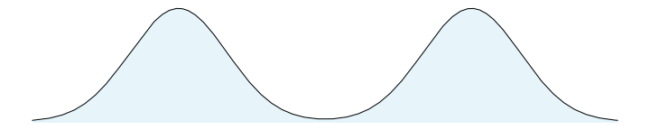

Motivating unbiased MCMC
We are going to try to unpack the following paragraph, which gives a motivation for implementing unbiased MCMC:
If one could initialize from the target distribution, usual estimators based on any Markov chain Monte Carlo would be unbiased, and one could simply average over independent chains. Except certain applications where this can be achieved with perfect simulation methods, Markov chain Monte Carlo estimators are ultimately consistent in the limit of the number of iterations. Algorithms that rely on such asymptotics face the risk of becoming obsolete if computational power continue to increase through the number of available processors and not through clock speed.
The underlying point here is that (most) MCMC is biased, but consistent. The bias is especially evident in (many) short chains, but computer architecture is moving in that direction. Let's define what all these words mean, and look at some plots.
What are (statistical) bias and consistency?
Suppose we have a number we would like to estimate, \(\theta\), and we have some way of producing an estimate of \(\theta\). We can call that estimate \(\hat{\theta}\). Then $$ \operatorname{bias}(\hat{\theta}) = \mathbb{E}[\hat{\theta}] - \theta $$ is called the statistical biasThe expectation above is over all datasets used to make the estimator, so this is a frequentist concept. Which is fine. IT'S FINE. This is often an unwieldy expectation to take: coin flipping, as usual, provides a concrete example. If we try to estimate the bias of a fair coin, \(P(H)\), and do it by observing two flips and reporting the average number of heads, then all data sets are \(\{HH, HT, TH, TT\}\), and each is equally likely. Our estimator would be \(\{1, 0.5, 0.5, 0\}\), respectively, so the expectation of our estimator over all datasets is \( 0.25 * (1 + 0.5 + 0.5 + 0) = 0.5\). of the estimator \(\hat{\theta}\). In case \(\operatorname{bias}(\hat{\theta}) = 0\), we call \(\hat{\theta}\) an unbiased estimator.
A related concept is consistency: as our dataset grows, what happens to the expectation of our estimator? Specifically, if \(\hat{\theta}_n\) is our estimator given a dataset of size \(n\), then an estimator is consistent if $$ ``\lim_{n \to \infty} \hat{\theta}_n = \theta", $$ where the limit is in scare quotes because it looks like math but is not very preciseNote that \(\hat{\theta}_n\) is a random variable for every \(n\), so really we need to talk about this under an integral sign. See the wikipedia article for details on notions of convergence. The estimator in sidenote 1 is unbiased and consistent. If the estimator was instead "5 + the number of heads divided by the number of flips", then the estimator is biased, but still consistent, since 5 is a much smaller number than \(\infty\). .
What does this have to do with MCMC?
Markov chain Monte Carlo (MCMC)Kudos if you got here without knowing what MCMC stood for! See the first half of this talk, or Chapter 11 of Christopher Bishop's wonderful "Pattern Recognition and Machine learning" (available free here) for a better introduction. is, broadly speaking, a way of computing expectations: we have some posterior distribution of parameters we care about, \(\pi(\theta | X)\), where \(X\) is some data, \(\theta\) are the parameters, and \(\pi\) is the posterior distribution. We would like to compute $$ \mathbb{E}_{\pi(\theta | X)}[f] = \int f(\theta)~d\pi(\theta | X), $$ but instead use MCMC to sample from \(\pi(\theta | X)\), and compute $$ \mathbb{E}_{\pi(\theta | X)}[f] \approx \frac{1}{N}\sum_{j=1}^N f(\theta_j), ~ \text{ where } \theta_j \sim \pi(\theta | X) $$
The allure of MCMC is that these estimators are consistent: for any \(f\), the expectation converges (in probability) to the true value. However, the estimators are also biased, and the bias depends on how the MCMC is initializedRecall from the opening quote that initializing with the stationary distribution results in unbiased estimates., as well as how long the chain runs for. If the future of computing is massively parallel, then getting more mileage out of thousands of short chains (which have more bias) is a useful undertaking.
Do you have any beautiful pictures illustrating MCMC bias?
Boy howdy, do I!
The way to put these together is a little tricky:
- Put together our test distribution: a mixture of two Gaussians, centered at \(\pm3\), each with standard deviation 1.
- Initialize 5,000 MCMC very efficient MCMC samplers in parallel, all at the same point, or from the same distribution.
- Run these chains for 75 steps. At step \(n\), we have 5,000 samples from the Markov chain after \(n\) steps. This is enough for a fairly accurate histogram.
- Plot all 75 histograms as a ridge plot, to see how the Markov chain moves towards the stationary distribution.
Conclusion
This post showed what bias and consistency are, and gave some intuition for MCMC samplers being consistent and biased. Hopefully we have some impression that running thousands of very short MCMC chains has more bias than running just a few long MCMC chians.
Remember that our entire goal is to compute \(\mathbb{E}_{\pi(\theta | X)}[f]\), and we will show in the next post how to use the couplings library to make an unbiased estimate of this using MCMC.